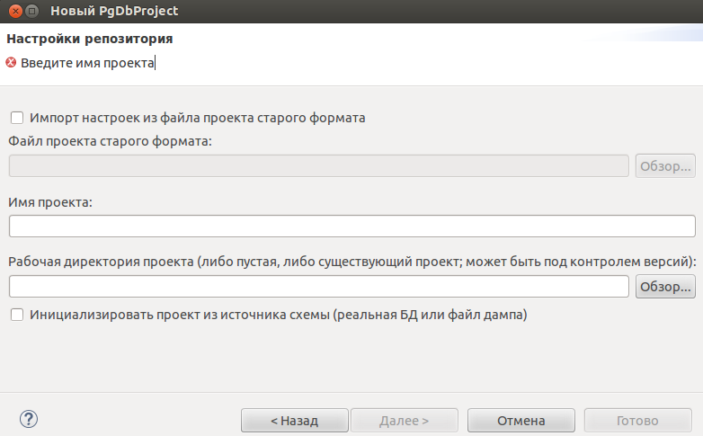

На этой странице Вам необходимо указать имя проекта, а также путь до директории, в которой будет располагаться проект.
Также здесь можно указать файлик настроек из старого проекта (имя_проекта.project), из которого произойдет импорт некоторых настроек.
